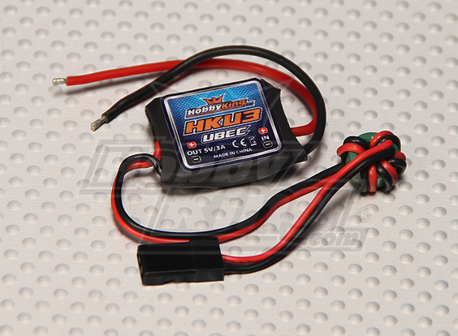

Отдельно хочу упомянуть про питание малины, оно жестко ограничено 5-ю вольтами поступающими от USB разъема, решение спорное, но ничего не поделаешь.
Я для питания использую стабилизатор BEC применяемый в любительских радиомоделях, он имеет небольшой размер, мощности (3А) хватает с большим запасом и полностью отвечает нашим требованиям.
Внешне стабилизатор выглядит так:

Спецификация:
Входное напряжение: 6V-23V (2-5S Li-Po)
Выходное напряжение: 5V/3A
Размер: 22.9mm*20.3mm*7.6mm (L*W*H)
Вес: 7.3g (включая провода)
Описание стабилизатора BEC:
http://www.hobbyking.com/hobbyking/store/__15212__HobbyKing_Micro_UBEC_3A_5v.html